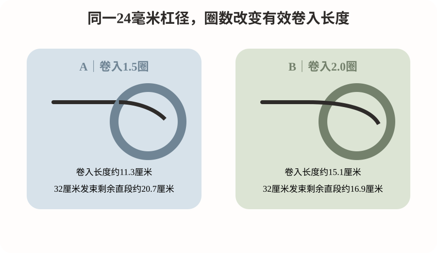
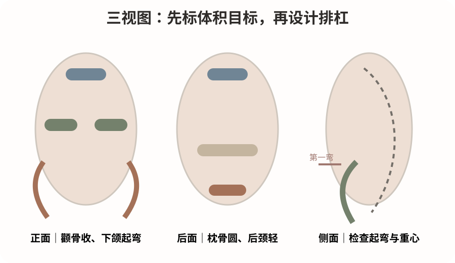
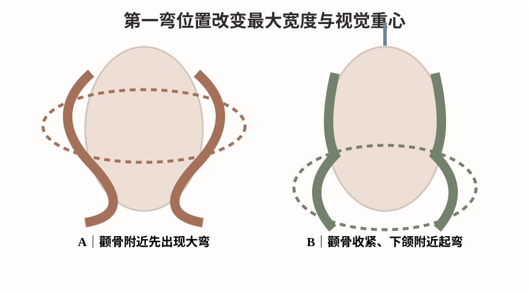

2026-10-13
先分清几何第一弯和视觉第一弯。几何第一弯是毛束进入杠体后开始明显改变方向的位置；视觉第一弯是顾客洗发、吹干并自然垂落后，肉眼首先看到的明显弯曲位置。两者经常不重合。
还原降低部分二硫键约束；水分使角蛋白体系增塑；杠体、有效卷入长度、圈数和张力规定初始曲率；加热促进结构松弛与水分迁移；干燥、氧化和冷却帮助新形态稳定。卸杠后，层次、重力、弹性回缩和整理状态又会改变弯曲的实际落点。
因此，同一杠径不等于同一第一弯。设计顺序应是：人物需要哪里出现弯，所需有效卷入长度是多少，层次是否允许，再确定杠径、圈数和排杠方向。

本课优先检索2026-10-06至2026-10-13，没有找到能够直接建立“第一弯位置—杠径—圈数”门店定量标准的新研究，因此使用直接烫发实验和专业专著解释机制。
S1把烫后毛发描述为热流变复杂的形状记忆复合材料，研究显示热响应不是一个简单统一的60摄氏度开关。证据强度为中：它支持温度、时间与结构松弛是连续过程，但不能作为具体设备安全参数。
S2系统整理毛发化学、含水、热与机械行为，支持水分、张力、纤维历史和卷入几何需要一起考虑。证据强度为中：是专业专著，不是针对某一排杠方案的真人比较。
科研可以解释为什么不同毛束的形变与回弹不同，却不能替发型师决定某个人物最适合的第一弯位置；后者属于审美设计和现场验证。
模拟教学案例：34岁，颧骨偏宽、下颌柔和，顶区略扁、后枕略平、颈部稍短；锁骨下约4厘米，中低层次，中等发量、细软发，轻度染后干燥，无明显漂发史和自然卷。每天希望5分钟内整理。顾客说：“自然一点，不要太卷，显脸小，有一点法式烫的感觉。”参考图为经过吹整的低重心松弛大弯。
诊断重点不是先选杠号，而是先定三个视觉目标：顶部轻支撑，颧骨附近控制宽度，下半区从下颌附近逐渐出现纹理。剪裁保留底线密度，以中低层次释放下半区，避免细软发过度削薄。卷度目标为顶部弱C支撑、脸周流向、下颌附近进入柔和S弯、发尾连贯收束。
药水、软化、含水、温度、时间和氧化依据具体产品、设备与毛束测试决定。本课不以加强药力替代第一弯设计，也不编造通用最优参数。

对宽颧骨人物，第一明显弯若过早出现并在颧骨水平形成最大体积，容易放大横向比例。把颧骨附近处理成流向和收紧区，让主要弯曲从下颌附近或略下逐渐出现，通常更容易建立纵向延伸与肩颈连接。
正面检查头发最大宽度是否与脸部最宽处重叠；45度观察脸周第一弯与颧骨、下颌的衔接；侧面检查顶区高度、后枕圆度和后颈下摆之间的比例。
如果换成窄长脸，适度让两侧更早出现柔和弯曲，可能有助于增加横向体积。人物比例决定增减体积的位置，同一排杠不能机械复制。

图1是卷入几何图：以24毫米理想圆柱为例，圆周约7.54厘米；1.5圈卷入长度约11.3厘米，2圈约15.1厘米。它只说明几何差异，实际还受叠绕、发片厚度、张力和回弹影响。
图2是三视图技术图：正面标颧骨控制与下颌起弯，后面标顶部、枕骨和后颈衔接，侧面标视觉第一弯。色块不表示实际杠数。
图3是美感对比图：A方案在颧骨附近先出现大弯，B方案先收紧颧骨，再从下颌附近起弯。三张图均为原创莫兰迪教学示意，不是成品效果保证。
排杠要把“弯从哪里开始”转化为可记录变量。顶区可在约60至90度提升范围内训练轻支撑，避免强卷堆到顶部；枕骨可在约45至75度范围建立后脑圆度，并检查与顶部、后颈是否断层；两侧可在约30至60度范围顺毛流斜向后引，控制颧骨横向体积；后颈可在约0至45度范围选用大杠或不烫候选，减少下摆堆积；刘海和脸周按分缝、颧骨与下颌位置单独计算有效卷入长度。
以上角度以局部头皮切线为0度，属于门店经验候选，不是论文验证的最佳值。真正影响第一弯的技术变量还包括层次长度、圈数、发片厚度、张力、含水、软化、热量和回弹。
不要只问“想烫多卷”，要问“想让哪里发生变化”。先确认最希望改变顶部、脸周还是下摆；“自然”是卷大、卷少，还是自然吹干也不炸；参考图是否经过吹整；每天愿意整理多久；最不能接受的是显脸宽、卷不明显还是持久度不足。
示范话术：“你喜欢的这张图，好看的重点不是卷有多大，而是卷开始的位置比较合适。你的颧骨位置比较明显，如果从这里就出现很蓬的弯，可能反而显脸宽。我的设计是顶部有一点高度，脸旁先做流向，让明显的弯从下颌附近逐渐出现。自然吹干会比照片里的造型状态更松，我会把日常需要做的整理也提前告诉你。”
题目：长度相同的两位中发顾客，A颧骨宽、下颌较窄，希望脸型协调；B脸型窄长、额头较高，希望增加柔和感。她们的第一明显弯都应该放在下颌以下吗？
参考答案：不应该机械统一。A通常要谨慎避免颧骨位置过度膨胀，可以优先尝试下颌附近或略下起弯；B可能需要让两侧更早出现柔和弯曲，以适度增加横向体积。思考顺序是人物比例、需要增加或减少的体积、第一弯、卷度重心、剪裁层次、排杠方向和有效卷入长度。
低风险毛束实验：使用相同来源、相近重量、统一32厘米长度的离体毛束至少6束和同一24毫米杠体。A组卷入1.5圈，B组卷入2圈，每组至少3束；毛束湿润状态、张力、固定方式、自然干燥时间和拍摄机位一致。本次不使用还原剂，也不进行高温加热，只训练几何观察。
记录卸杠后第一明显弯距发根的位置、24小时后的位置、统一洗发后的变化和各组离散程度。这个实验只能展示机械卷绕与暂时形变，不能替代化学热烫持久性试验。
最重要的原理：化学处理决定形成稳定曲率的能力，而有效卷入长度、层次、回弹和整理状态共同决定第一弯最终出现的位置。
最容易犯的错误：只考虑使用几号杠，却没有先判断卷应该从人物的哪个位置开始。
明天最值得观察：顾客站立后，从45度方向检查第一弯是否自然衔接颧骨、下颌与肩颈轮廓。